Each card is one eight-bar window: the published chart against one
agent's reharmonization of it, from the same melody. Press play and the cursor
follows the music; the Chart / Agent buttons switch sides without
losing your place. On the agent's sheet the chords it changed are
in yellow, and every edit below is tagged with the theory
rule it fired — or off book when it satisfies
none; bar numbers below count from the start of the window, as printed on the sheet.
The five agents differ only in edit budget, whether they may delete, and how
far outside the rulebook they explore; Unruled was trained without the
rulebook at all. All 5 tunes are held out: neither the agents nor the
reward model saw them in training.
Don't Get Around Much Anymore
The widest range of theory in the set: thirteen distinct rules fire across the five agents, and every agent gains most here.
Terse — cap 4 edits, cannot delete.
4 edits, 0 of them off book.
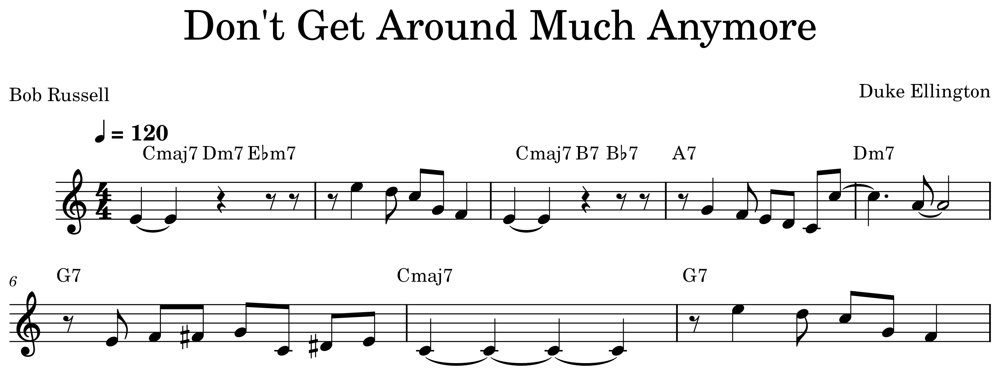
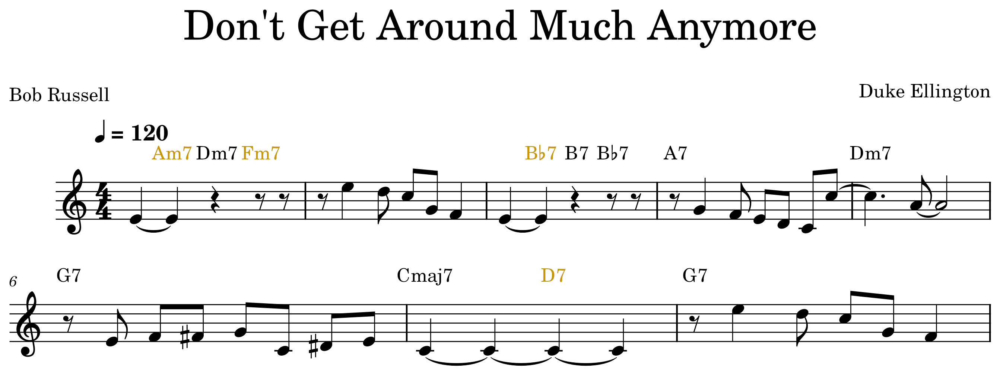
Its edits, in the order it played them:
bar 3.2: Cmaj7 → Bb7modal interchangechromatic approach
bar 7.3: insert D7dominant approach
bar 1.4: Ebm7 → Fm7dominant approach replace minorii-V relatedmodal interchange
bar 1.2: Cmaj7 → Am7functional substitution
Tight — cap 6 edits, the tightest explorer.
6 edits, 0 of them off book.
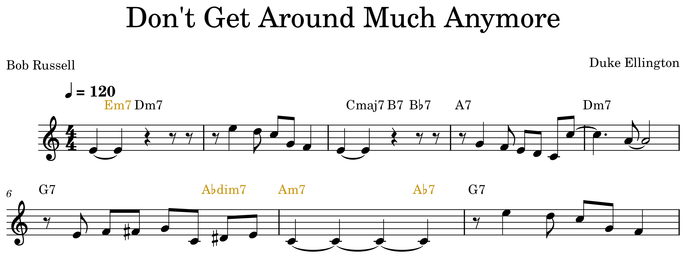
Its edits, in the order it played them:
bar 1.4: remove Ebm7 (the previous chord sustains)remove chord
bar 7.4: insert Ab7chromatic approach
bar 1.2: Cmaj7 → Em7functional substitution
bar 7.1: Cmaj7 → Am7deceptive cadencefunctional substitution
bar 6.4: insert Abm7chromatic approach
bar 6.4: Abm7 → Abdim7diminished passingcommon tone diminished
Curious — cap 8 edits, explores off the book most.
8 edits, 0 of them off book.
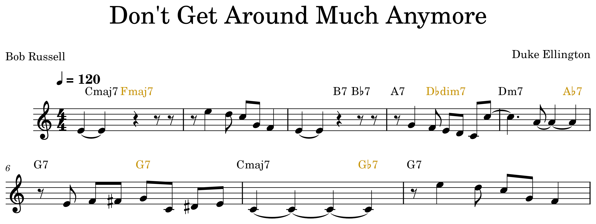
Its edits, in the order it played them:
bar 1.4: remove Ebm7 (the previous chord sustains)remove chord
bar 3.2: remove Cmaj7 (the previous chord sustains)remove chord
bar 5.4: insert Ab7chromatic approach
bar 6.3: insert G7dominant approach
bar 1.3: Dm7 → Fmaj7functional substitution
bar 7.4: insert Gb7chromatic approach
bar 4.3: insert A7dominant approach
bar 4.3: A7 → Dbdim7diminished for dominant
Long — cap 10 edits, pays most per edit.
10 edits, 0 of them off book.
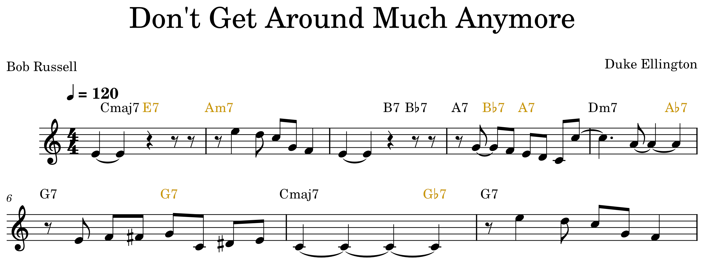
Its edits, in the order it played them:
bar 4.3: insert A7dominant approach
bar 1.4: remove Ebm7 (the previous chord sustains)remove chord
bar 5.4: insert Ab7chromatic approach
bar 3.2: remove Cmaj7 (the previous chord sustains)remove chord
bar 7.4: insert Gb7chromatic approach
bar 6.3: insert G7dominant approach
bar 4.2: insert Bb7chromatic approach
bar 1.3: remove Dm7 (the previous chord sustains)remove chord
bar 2.1: insert Am7harmonic fill
bar 1.3: insert E7dominant approach
Unruled — cap 10 edits, trained without the rulebook.
10 edits, 6 of them off book.
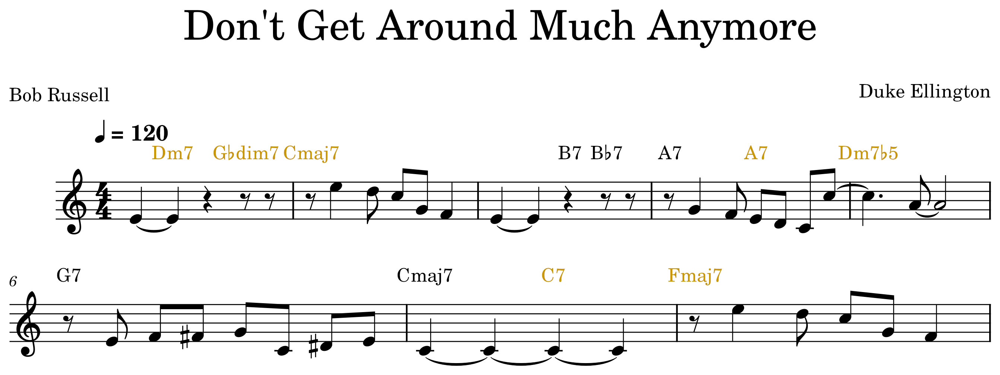
Its edits, in the order it played them:
bar 1.2: Cmaj7 → Dm7off book
bar 1.4: Ebm7 → Fmaj7plagal cadence
bar 1.4: Fmaj7 → Db7off book
bar 5.1: Dm7 → Dm7b5ii-V relatedmodal interchange
bar 3.2: remove Cmaj7 (the previous chord sustains)remove chord
bar 2.1: insert Cmaj7off book
bar 8.1: G7 → Fmaj7off book
bar 7.3: insert C7dominant approach
bar 4.3: insert A7off book
bar 1.4: Db7 → Gbdim7off book
Stella by Starlight
The tune our listeners could not place — identified on 2 of 9 items. The agents edit it lightly and the reward model barely moves.
Terse — cap 4 edits, cannot delete.
4 edits, 0 of them off book.
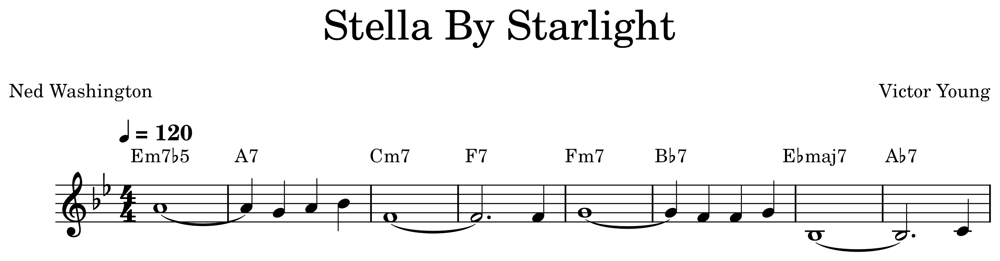
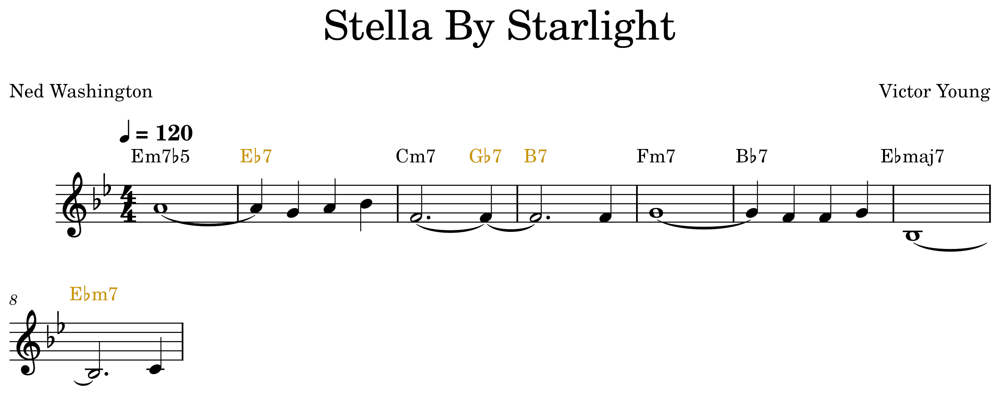
Its edits, in the order it played them:
bar 8.1: Ab7 → Ebm7minor for dominantmodal interchange
bar 2.1: A7 → Eb7tritone substitution
bar 3.4: insert Gb7chromatic approach
bar 4.1: F7 → B7tritone substitution
Tight — cap 6 edits, the tightest explorer.
6 edits, 0 of them off book.
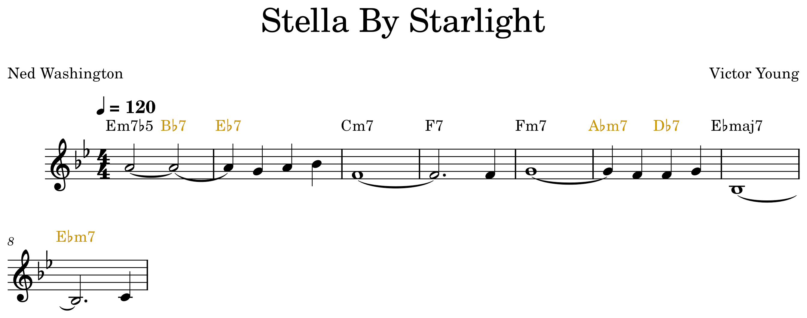
Its edits, in the order it played them:
bar 2.1: A7 → Eb7tritone substitution
bar 1.3: insert Bb7dominant approach
bar 8.1: Ab7 → Ebm7minor for dominantmodal interchange
bar 6.3: insert Bb7dominant approach
bar 6.3: Bb7 → Db7backdoor dominant
bar 6.1: Bb7 → Abm7ii-V related
Curious — cap 8 edits, explores off the book most.
5 edits, 0 of them off book.
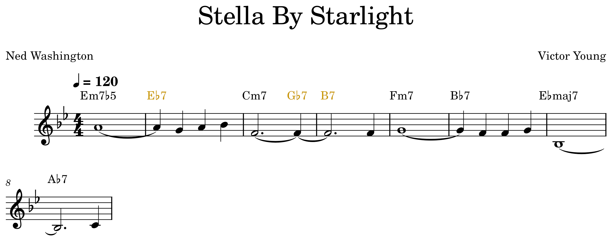
Its edits, in the order it played them:
bar 2.1: A7 → Eb7tritone substitution
bar 5.4: insert B7chromatic approach
bar 5.4: remove B7 (the previous chord sustains)remove chord
bar 3.4: insert Gb7chromatic approach
bar 4.1: F7 → B7tritone substitution
Long — cap 10 edits, pays most per edit.
5 edits, 0 of them off book.
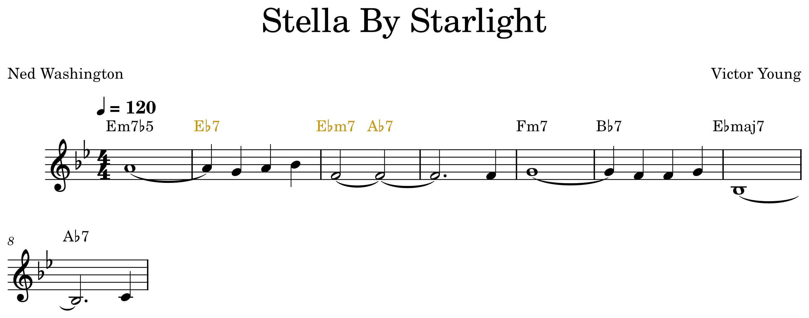
Its edits, in the order it played them:
bar 2.1: A7 → Eb7tritone substitution
bar 4.1: F7 → Ebm7modal interchange
bar 3.1: Cm7 → Ebm7modal interchange
bar 4.1: remove Ebm7 (the previous chord sustains)remove chord
bar 3.3: insert Ab7harmonic fill
Unruled — cap 10 edits, trained without the rulebook.
4 edits, 3 of them off book.
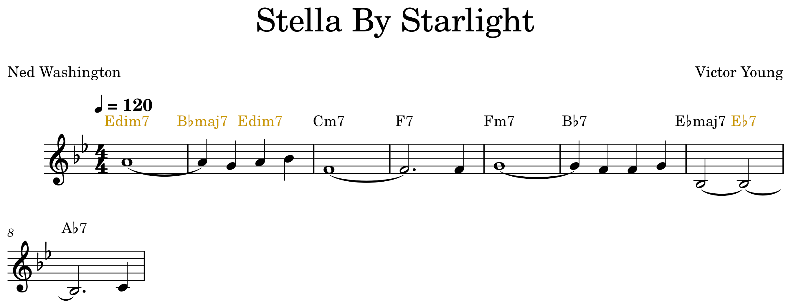
Its edits, in the order it played them:
bar 2.1: A7 → Bbmaj7off book
bar 7.3: insert Eb7off book
bar 1.1: Em7b5 → Edim7common tone diminished
bar 2.3: insert Edim7off book
It Never Entered My Mind
Rarely placed by our listeners — identified on 3 of 9 items — and a tune where even the shielded agents step outside the rulebook.
Terse — cap 4 edits, cannot delete.
4 edits, 2 of them off book.
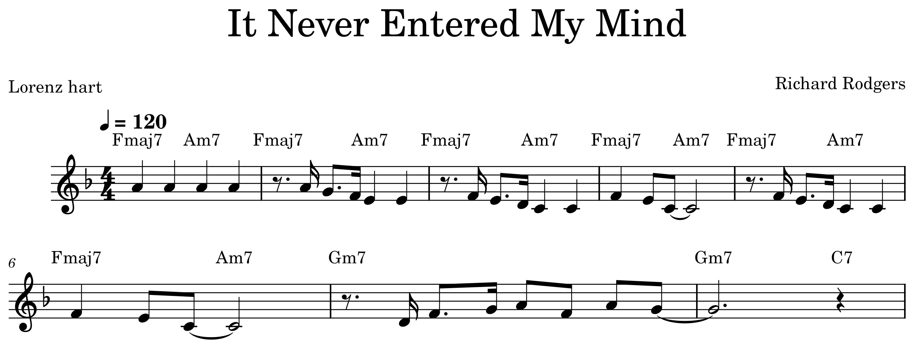
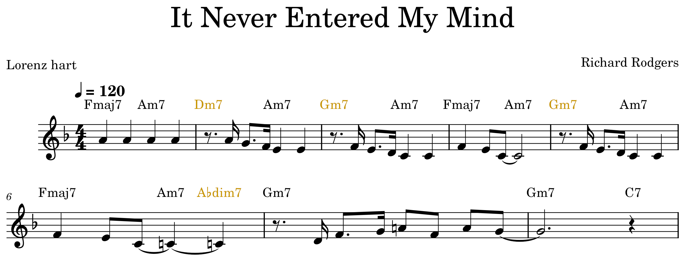
Its edits, in the order it played them:
bar 6.4: insert Abdim7diminished passing
bar 5.1: Fmaj7 → Gm7off book
bar 3.1: Fmaj7 → Gm7off book
bar 2.1: Fmaj7 → Dm7plagal cadencefunctional substitution
Tight — cap 6 edits, the tightest explorer.
5 edits, 1 of them off book.
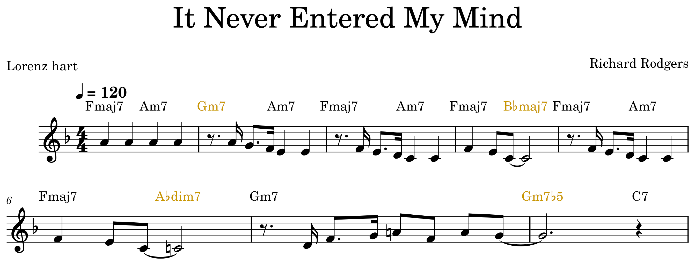
Its edits, in the order it played them:
bar 8.1: Gm7 → Gm7b5ii-V relatedmodal interchange
bar 6.3: Am7 → Abmaj7modal interchange
bar 6.3: Abmaj7 → Abdim7common tone diminished
bar 4.3: Am7 → Bbmaj7plagal cadence
bar 2.1: Fmaj7 → Gm7off book
Curious — cap 8 edits, explores off the book most.
8 edits, 0 of them off book.
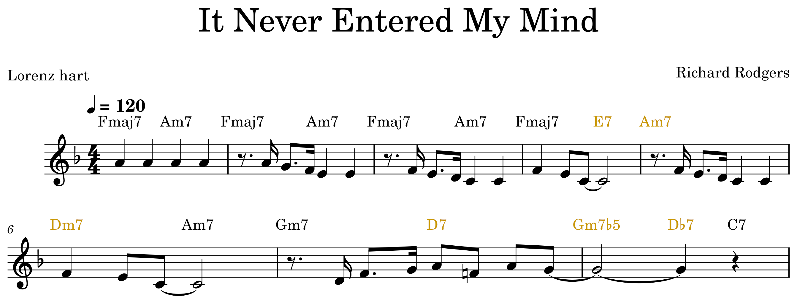
Its edits, in the order it played them:
bar 7.3: insert D7dominant approach
bar 8.1: Gm7 → Gm7b5ii-V relatedmodal interchange
bar 4.3: remove Am7 (the previous chord sustains)remove chord
bar 8.3: insert Db7chromatic approach
bar 5.3: remove Am7 (the previous chord sustains)remove chord
bar 6.1: Fmaj7 → Dm7plagal cadencefunctional substitution
bar 5.1: Fmaj7 → Am7functional substitution
bar 4.3: insert E7dominant approach
Long — cap 10 edits, pays most per edit.
10 edits, 0 of them off book.
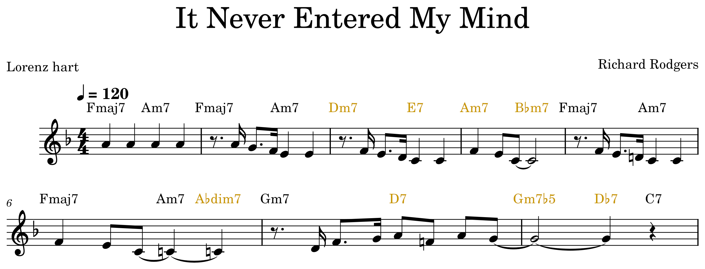
Its edits, in the order it played them:
bar 6.4: insert Abm7chromatic approach
bar 6.4: Abm7 → Abdim7diminished passingcommon tone diminished
bar 7.3: insert D7dominant approach
bar 8.3: insert Db7chromatic approach
bar 8.1: Gm7 → Gm7b5modal interchange
bar 4.3: Am7 → Bbm7modal interchange
bar 4.1: Fmaj7 → Am7chromatic approachfunctional substitution
bar 3.1: Fmaj7 → Dm7plagal cadencefunctional substitution
bar 3.3: remove Am7 (the previous chord sustains)remove chord
bar 3.3: insert E7dominant approach
Unruled — cap 10 edits, trained without the rulebook.
8 edits, 6 of them off book.
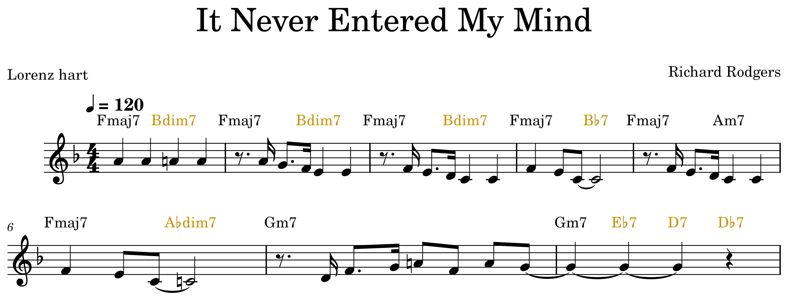
Its edits, in the order it played them:
bar 6.3: Am7 → Abdim7off book
bar 2.3: Am7 → Bdim7off book
bar 4.3: Am7 → Bb7off book
bar 1.3: Am7 → Bdim7off book
bar 8.4: C7 → Db7off book
bar 8.3: insert D7chromatic approach
bar 3.3: Am7 → Bdim7off book
bar 8.2: insert Eb7chromatic approach
Come Sunday
The sharpest contrast between shielded and unshielded: Terse gains in four edits what Unruled takes ten and nine off-book edits to beat.
Terse — cap 4 edits, cannot delete.
4 edits, 0 of them off book.
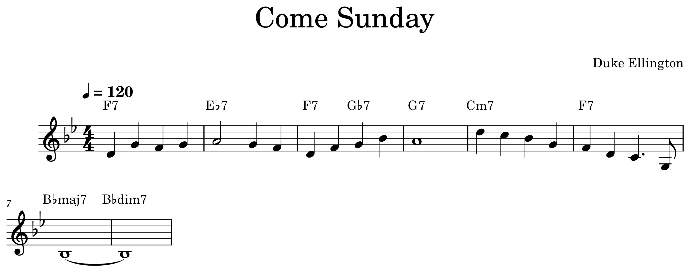
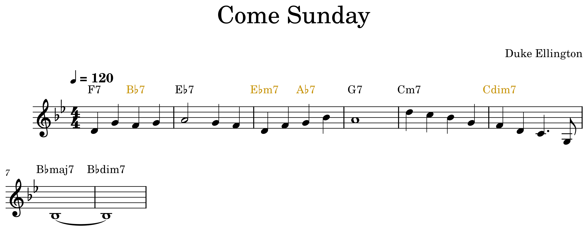
Its edits, in the order it played them:
bar 1.3: insert Bb7dominant approach
bar 6.1: F7 → Cdim7diminished for dominant
bar 3.3: Gb7 → Ab7modal interchangechromatic approach
bar 3.1: F7 → Ebm7ii-V relatedmodal interchange
Tight — cap 6 edits, the tightest explorer.
6 edits, 1 of them off book.
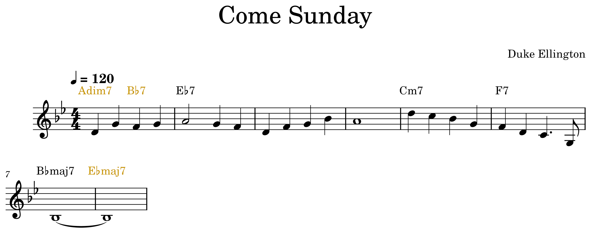
Its edits, in the order it played them:
bar 1.3: insert Bb7dominant approach
bar 3.3: remove Gb7 (the previous chord sustains)remove chord
bar 4.1: remove G7 (the previous chord sustains)remove chord
bar 3.1: remove F7 (the previous chord sustains)remove chord
bar 1.1: F7 → Adim7diminished for dominant
bar 8.1: Bbdim7 → Ebmaj7off book
Curious — cap 8 edits, explores off the book most.
8 edits, 1 of them off book.
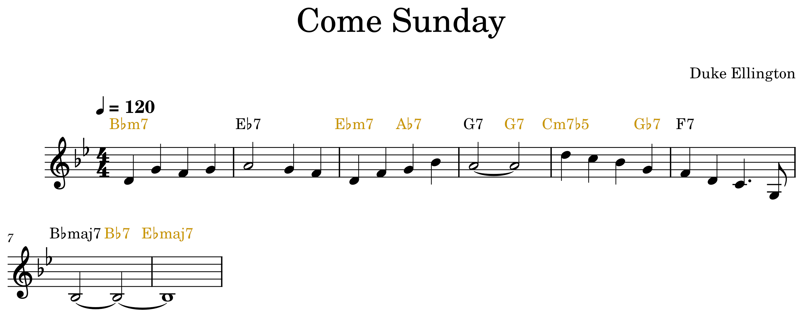
Its edits, in the order it played them:
bar 8.1: Bbdim7 → Ebmaj7off book
bar 7.3: insert Bb7dominant approach
bar 4.3: insert G7dominant approach
bar 5.1: Cm7 → Cm7b5ii-V relatedmodal interchange
bar 3.3: Gb7 → Ab7modal interchangechromatic approach
bar 3.1: F7 → Ebm7ii-V relatedmodal interchange
bar 5.4: insert Gb7chromatic approach
bar 1.1: F7 → Bbm7ii-V relatedmodal interchange
Long — cap 10 edits, pays most per edit.
9 edits, 0 of them off book.
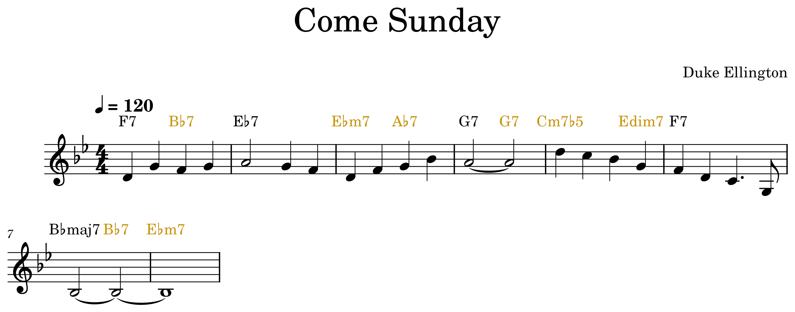
Its edits, in the order it played them:
bar 4.3: insert G7dominant approach
bar 5.4: insert Gb7chromatic approach
bar 3.3: Gb7 → Ab7modal interchangechromatic approach
bar 3.1: F7 → Ebm7ii-V relatedmodal interchange
bar 1.3: insert Bb7dominant approach
bar 8.1: Bbdim7 → Ebm7modal interchange
bar 7.3: insert Bb7dominant approach
bar 5.1: Cm7 → Cm7b5modal interchange
bar 5.4: Gb7 → Edim7diminished for dominant
Unruled — cap 10 edits, trained without the rulebook.
10 edits, 9 of them off book.
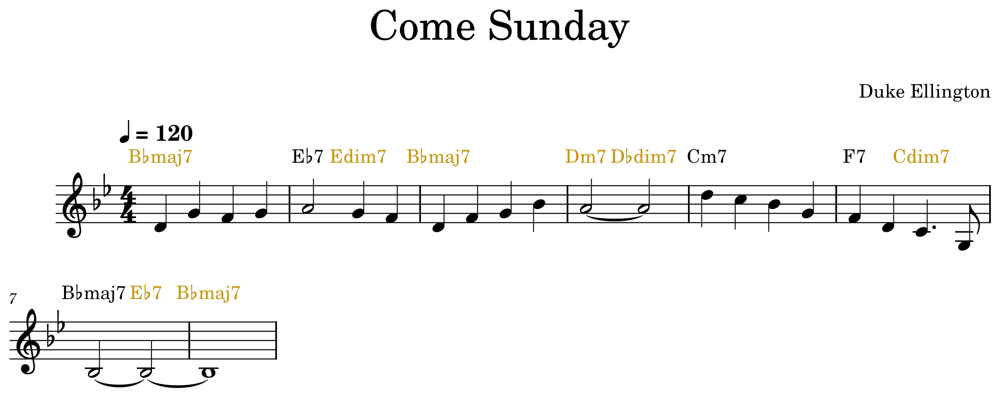
Its edits, in the order it played them:
bar 3.1: F7 → Bbmaj7off book
bar 8.1: Bbdim7 → Bbmaj7off book
bar 2.3: insert Edim7off book
bar 4.1: G7 → Ebmaj7off book
bar 4.1: Ebmaj7 → Dm7off book
bar 4.3: insert Dbdim7off book
bar 3.3: remove Gb7 (the previous chord sustains)remove chord
bar 6.3: insert Cdim7off book
bar 1.1: F7 → Bbmaj7off book
bar 7.3: insert Eb7off book
It's Easy to Remember
A ballad the five agents treat five different ways, over eleven rules.
Terse — cap 4 edits, cannot delete.
4 edits, 0 of them off book.
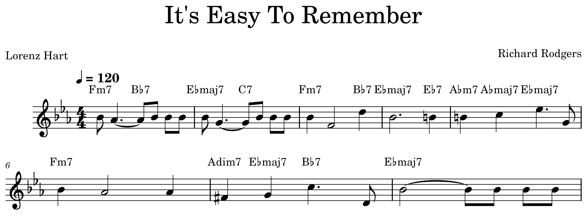
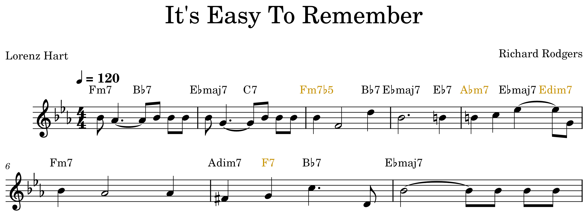
Its edits, in the order it played them:
bar 7.2: Ebmaj7 → F7dominant approach replace
bar 3.1: Fm7 → Fm7b5ii-V relatedmodal interchange
bar 5.2: Abmaj7 → Abm7modal interchangeno change on the sheet
bar 5.4: insert Edim7diminished passing
Tight — cap 6 edits, the tightest explorer.
6 edits, 0 of them off book.
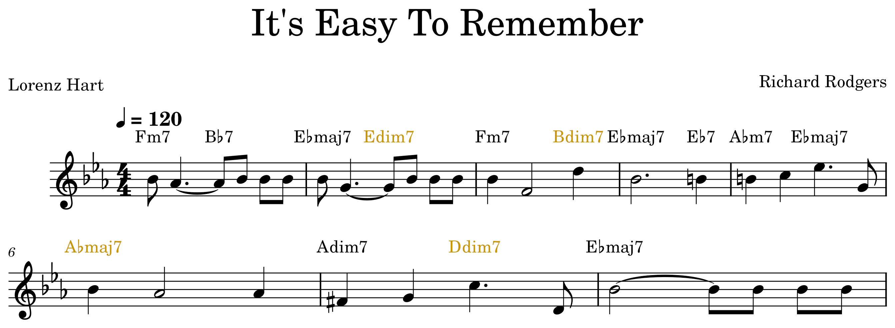
Its edits, in the order it played them:
bar 2.3: C7 → Edim7diminished passingdiminished for dominant
bar 7.3: Bb7 → Ddim7diminished for dominant
bar 5.2: remove Abmaj7 (the previous chord sustains)remove chord
bar 6.1: Fm7 → Abmaj7functional substitution
bar 3.4: Bb7 → Bdim7diminished for dominant
bar 7.2: remove Ebmaj7 (the previous chord sustains)remove chord
Curious — cap 8 edits, explores off the book most.
7 edits, 0 of them off book.
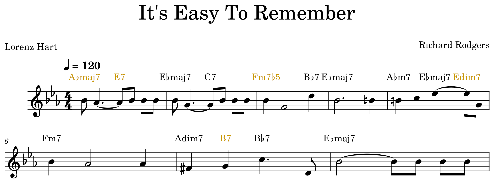
Its edits, in the order it played them:
bar 5.2: remove Abmaj7 (the previous chord sustains)remove chord
bar 1.3: Bb7 → E7tritone substitution
bar 3.1: Fm7 → Fm7b5ii-V relatedmodal interchange
bar 7.2: Ebmaj7 → B7chromatic approach
bar 1.1: Fm7 → Abmaj7functional substitution
bar 4.4: remove Eb7 (the previous chord sustains)remove chord
bar 5.4: insert Edim7diminished passing
Long — cap 10 edits, pays most per edit.
8 edits, 0 of them off book.
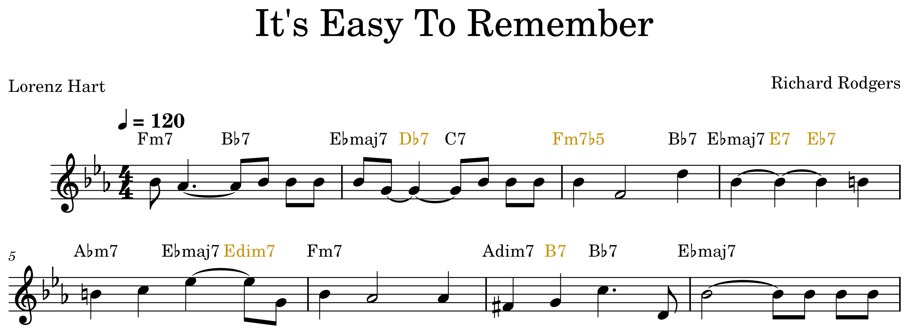
Its edits, in the order it played them:
bar 5.4: insert Edim7diminished passing
bar 5.2: remove Abmaj7 (the previous chord sustains)remove chord
bar 7.2: Ebmaj7 → B7chromatic approach
bar 3.1: Fm7 → Fm7b5ii-V relatedmodal interchange
bar 4.4: remove Eb7 (the previous chord sustains)remove chord
bar 4.3: insert Eb7dominant approach
bar 4.2: insert E7chromatic approach
bar 2.2: insert Db7chromatic approach
Unruled — cap 10 edits, trained without the rulebook.
8 edits, 2 of them off book.
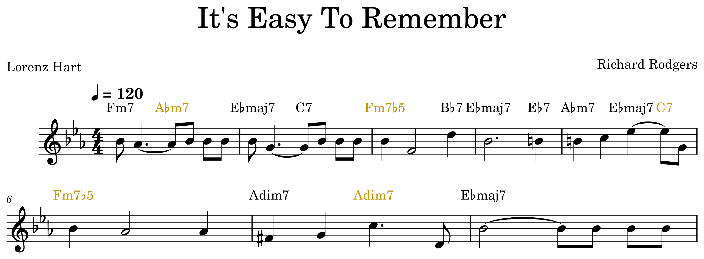
Its edits, in the order it played them:
bar 7.2: Ebmaj7 → Fm7dominant approach replace minor
bar 3.1: Fm7 → Fm7b5ii-V relatedmodal interchange
bar 5.2: remove Abmaj7 (the previous chord sustains)remove chord
bar 5.4: insert C7off book
bar 6.1: Fm7 → Fm7b5modal interchange
bar 7.2: remove Fm7 (the previous chord sustains)remove chord
bar 7.3: Bb7 → Adim7off book
bar 1.3: Bb7 → Abm7modal interchange
Rollouts are greedy, as deployed — no search, no reward model
consulted at play time. Bar positions come from MuseScore's own measure export, so
the cursor follows the engraving rather than an assumed layout.
Eight-bar excerpts, presented as research commentary alongside the
analysis they illustrate. Audio is a synthesized rendering from chord symbols, not a
recording. Non-commercial; no full scores are distributed. Lead-sheet sources: the
JazzMus corpus (CC BY-NC 4.0) and the Wikifonia archive. If you hold rights
in any material here and would like it removed, contact
alonyamin0@gmail.com.